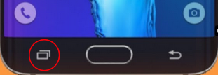
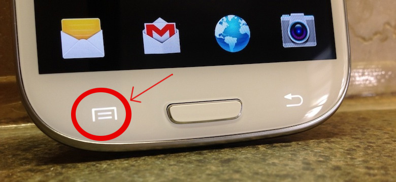
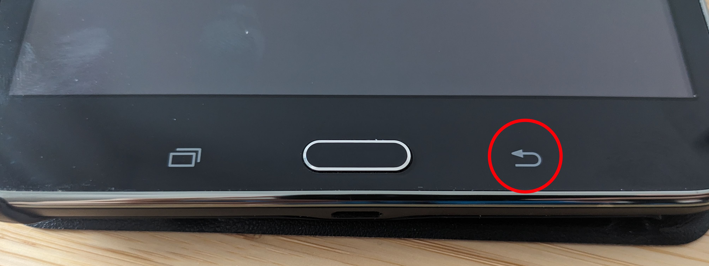

Input devices
| To keep this document user-focused, please keep development-related information (such as driver code troubleshooting) in Input_devices/Development. |
Introduction
Typically used human interface devices (HID) include:
- touchscreens
- keyboards
- buttons
- touch keys
- mouses
- gaming devices - gamepads, joysticks, steering wheels
This article's purpose is to provide basic information about troubleshooting and advanced interaction with HID devices.
Touch keys
Touchkeys are buttons with minimal or no physical actuation or haptic feedback. They're triggered by a touch on a specific area of the device, usually with a corresponding icon (see examples below). They are usually detected by the same hardware as the touchscreen itself.
| Button name | App selection | Menu | Back |
|---|---|---|---|
| Key code | KEY_APPSELECT | KEY_MENU | KEY_BACK |
| Android's button example |  |
 |
 |
| Limitations | Not available in X11 | - | - |
{kind=link}
{kind=link}
{kind=link}
Generic debugging steps
Getting input device information using udevadm
Make sure that buttons are recognized as eventX inside /dev/input directory
To make sure that the input buttons are recognized, run the following command:
$ udevadm info -a /dev/input/event0
The command will print udev properties which can be used to assign udev rules, for example tagging specified device as touchscreen.
Note that HID input device doesn't trigger udev event, so the following command can't be used to detect key-presses from HID input device.
# udevadm monitor
Using evtest to show input events
evtest can be used to detect events sent by input devices. To use it, install evtest package.
# apk add evtest
You can run evtest to pick a device from the list, or you can add the device name as an argument. For example:
# evtest /dev/input/event0
(...)
Testing ... (interrupt to exit)
Event: time 1262306351.564957, type 1 (EV_KEY), code 330 (BTN_TOUCH), value 1
Event: time 1262306351.564957, type 3 (EV_ABS), code 57 (ABS_MT_TRACKING_ID), value 0
Event: time 1262306351.564957, type 3 (EV_ABS), code 48 (ABS_MT_TOUCH_MAJOR), value 8
Event: time 1262306351.564957, type 3 (EV_ABS), code 53 (ABS_MT_POSITION_X), value 101
Event: time 1262306351.564957, type 3 (EV_ABS), code 54 (ABS_MT_POSITION_Y), value 163
Event: time 1262306351.564957, ++++++++++++++ SYN_MT_REPORT ++++++++++++
Event: time 1262306351.564957, -------------- SYN_REPORT ------------
Event: time 1262306351.590508, type 3 (EV_ABS), code 57 (ABS_MT_TRACKING_ID), value 0
Event: time 1262306351.590508, type 3 (EV_ABS), code 48 (ABS_MT_TOUCH_MAJOR), value 8
Event: time 1262306351.590508, type 3 (EV_ABS), code 53 (ABS_MT_POSITION_X), value 103
Event: time 1262306351.590508, type 3 (EV_ABS), code 54 (ABS_MT_POSITION_Y), value 155
Event: time 1262306351.590508, ++++++++++++++ SYN_MT_REPORT ++++++++++++
Event: time 1262306351.590508, -------------- SYN_REPORT ------------
Some of those codes are explained in kernel documentation, see ie. multi-touch protocol
Test with libinput debug-events
You can check if libinput understands the events your HID driver emits with libinput debug-events.
For example it's possible that libinput doesn't get any events or that it doesn't get TOUCH_DOWN/TOUCH_UP events. You can see the raw events libinput receives with libinput record.
Following is example output from libinput debug-events when the screen is briefly touched in a case where the touchscreen is working correctly:
$ libinput debug-events event10 TOUCH_DOWN +0.000s 0 (0) 53.40/23.11 (385.00/296.00mm) event10 TOUCH_FRAME +0.000s event10 TOUCH_MOTION +0.010s 0 (0) 52.84/24.04 (381.00/308.00mm) event10 TOUCH_FRAME +0.010s event10 TOUCH_MOTION +0.020s 0 (0) 52.70/24.36 (380.00/312.00mm) event10 TOUCH_FRAME +0.020s event10 TOUCH_MOTION +0.039s 0 (0) 52.70/24.51 (380.00/314.00mm) event10 TOUCH_FRAME +0.039s event10 TOUCH_UP +0.065s event10 TOUCH_FRAME +0.065s
Using xev/wev to get key names
You can get key names with following tools:
- Kernel names with
evtest(package evtest) - xkb names with
xev(package xev) - Wayland names with
wev(package wev)
Reacting to events
Using triggerhappy to handle HID input events
{{note|Triggerhappy has been replaced with HKDM}. Help is welcome, to replace this section with up-to-date information.}
Installation
Triggerhappy can be used to handle HID input device. After postmarketOS is installed, add it with:
$ apk add triggerhappy
If you did not install it yet, you can also request it to be added to the installation in pmbootstrap init or by using the --add parameter for the install action:
$ pmbootstrap install --add=triggerhappy
Usage
Run thd on the device to find what is sent:
$ sudo thd --dump /dev/input/event*
With thd --dump running, touch the touchscreen and press the available buttons. There will be information related to the input device printed on the ssh session.
EV_ABS ABS_MT_TRACKING_ID 16 /dev/input/event0 # ABS_MT_TRACKING_ID 16 command EV_ABS ABS_MT_TRACKING_ID 0 /dev/input/event0 # ABS_MT_TRACKING_ID 0 command EV_ABS ABS_MT_POSITION_X 312 /dev/input/event0 # ABS_MT_POSITION_X 312 command EV_ABS ABS_MT_POSITION_Y 1013 /dev/input/event0 # ABS_MT_POSITION_Y 1013 command EV_ABS ABS_MT_TOUCH_MAJOR 123 /dev/input/event0 # ABS_MT_TOUCH_MAJOR 123 command EV_ABS ABS_MT_WIDTH_MAJOR 144 /dev/input/event0 # ABS_MT_WIDTH_MAJOR 144 command EV_KEY KEY_POWER 1 /dev/input/event1 # KEY_POWER 1 command EV_KEY KEY_POWER 0 /dev/input/event1 # KEY_POWER 0 command EV_KEY KEY_VOLUMEDOWN 1 /dev/input/event1 # KEY_VOLUMEDOWN 1 command EV_KEY KEY_VOLUMEDOWN 0 /dev/input/event1 # KEY_VOLUMEDOWN 0 command EV_KEY KEY_VOLUMEUP 1 /dev/input/event2 # KEY_VOLUMEUP 1 command EV_KEY KEY_VOLUMEUP 0 /dev/input/event2 # KEY_VOLUMEUP 0 command
The information can be used to create a triggerhappy configuration, for example assigning a command when the home touch button is pressed.
Example /etc/triggerhappy/triggers.d/buttons.conf:
KEY_POWER 1 poweroff KEY_VOLUMEDOWN+KEY_POWER 1 reboot #ABS_MT_POSITION_Y@ 1344 @home #ABS_MT_POSITION_X@home 360 logger "Home button is pressed" #ABS_MT_POSITION_Y@home 1344 @
The triggerhappy service needs to be enabled to listen HID button keypresses:
# rc-update add triggerhappy default
Using busybox acpid
Some device buttons can trigger acpi events. Busybox acpid can be used to handle these events, for example nokia n900.
For this to work, an acpi.map is needed. Look at device-nokia-n900 for more information.